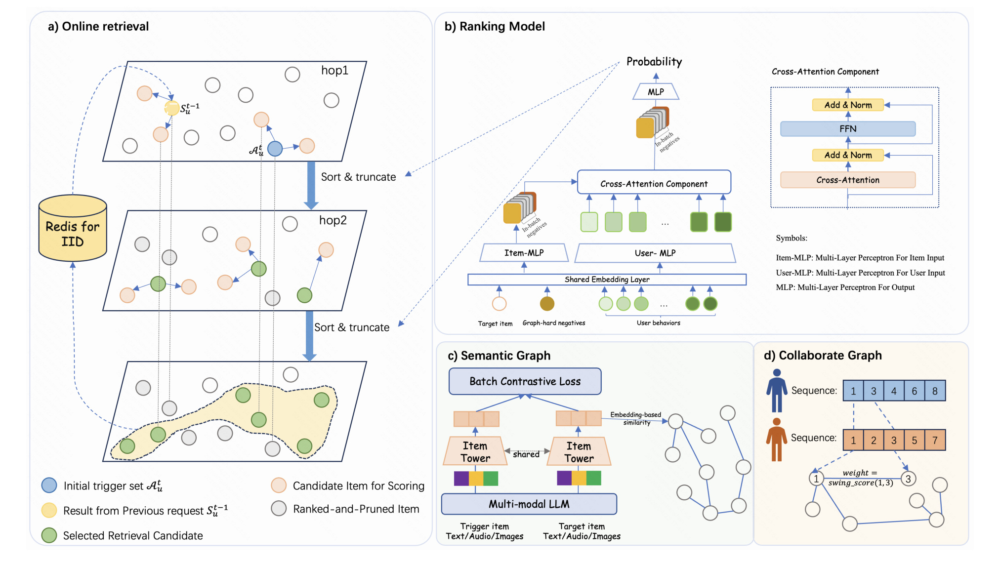
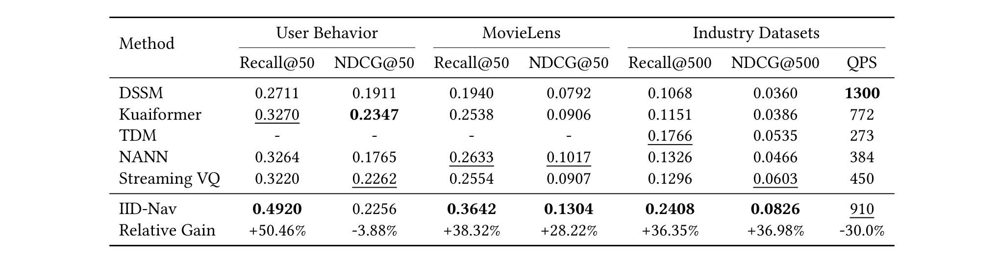
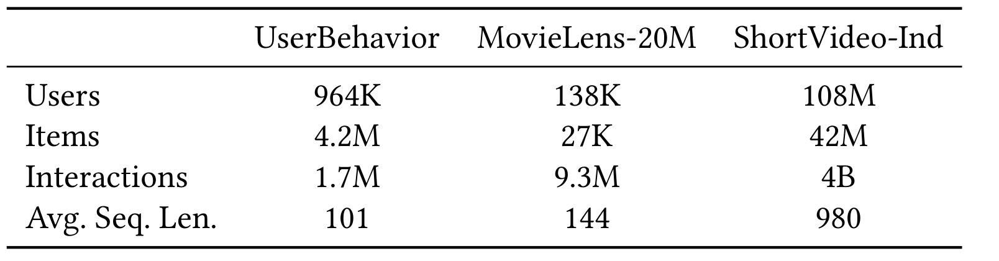
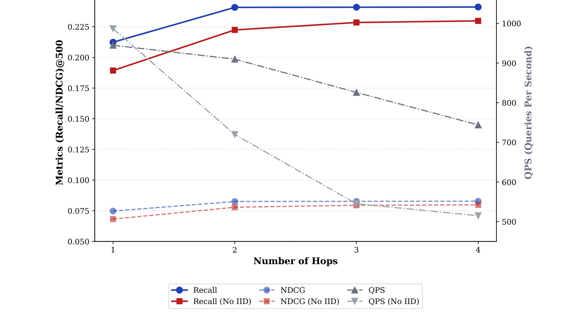
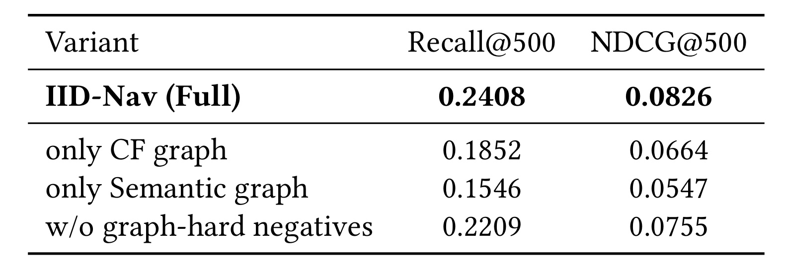
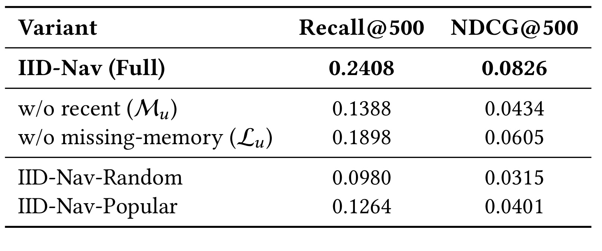
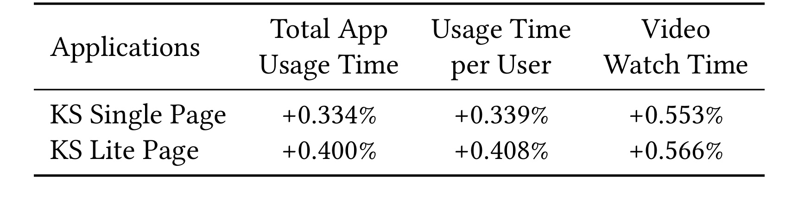

快手-IIDNav
这篇论文是快手团队在工业级推荐召回上的一篇 RecSys 2026 工作，标题是 From Extraction to Navigation: Progressive Retrieval with Indirectly Infinite Depth。论文入口为 arXiv:2606.29970。作者来自 Kuaishou Technology，Kun Gai 标注为 Unaffiliated。论文提出 IID-Nav，把召回从静态相似项提取改成带状态的图导航：系统不只在一次请求里扩展若干跳，而是把上一轮高质量探索前沿缓存下来，下一次请求继续接力，从而在单次延迟预算不线性增加的前提下逼近更深的兴趣空间。代码或项目仓库本轮未核验到公开入口，论文首页 DOI 仍是占位符。
大规模推荐召回必须在严格延迟下从十亿级物品里找出极小的相关子集；传统 i2i 规则容易被历史邻域困住，结构化索引又常从静态入口沿刚性拓扑越搜越偏。当召回阶段漏掉用户潜在兴趣时，下游再复杂的排序也无法补回这些候选。
1. 背景和问题
工业推荐链路里，召回不是一个可以随意降级的前置模块。它面对的是最苛刻的组合约束：物品库巨大、候选预算有限、请求延迟通常被压在百毫秒量级，同时用户兴趣又不是单峰、静态、短期可穷尽的。论文把这个矛盾放在“matching stage acts as the critical bottleneck”的位置理解：排序、重排、混排可以在候选内提高精度，但如果召回没有把某类潜在兴趣带进候选池，后续模块没有机会凭空恢复。因此这篇论文不是在讨论一个离线 embedding 指标，而是在讨论工业系统里“探索深度”和“服务延迟”如何同时成立。
传统 item-to-item 召回的优势是简单、稳定、低延迟。Swing 或类似 i2i 方法可以预先计算物品相似边，在线时根据用户最近行为做查表扩展。这种路线的问题也很清楚：它把召回理解成静态相似性提取，默认“用户已经交互过的邻域附近”就是下一批候选的来源。论文称之为 interest tunnel effect，也就是搜索轨迹被局部高密度行为簇困住。对短视频、电商、内容流这类场景，用户可能有长期兴趣、被短期曝光压住的兴趣、最近没有触发但仍有价值的兴趣，单次从近邻查表往外扩，常常只能在熟悉区域里反复采样。
为了突破静态 i2i，工业界已经做过多类结构化检索。TDM、JOT、MISS、Deep Retrieval 等树或多路径索引把模型和索引结合起来，NANN 这类方法把 item space 看成可遍历环境，StreamVQ 和 GRank 则从量化或 generate-rank 的角度提高召回效率。这些方法比简单查表更强，但论文认为它们还共享一个缺陷：入口或拓扑仍然过于固定。树结构一旦建好，路径很大程度上被层级决定；量化码本和固定全局入口也可能与用户实时意图脱节。搜索越深，轨迹越可能离开真实意图空间，这就是 search drift。
IID-Nav 的命名来自 Indirectly Infinite Depth，重点在 indirectly。它不是让一次请求真的跑无限跳，也不是把图搜索的 hop 数硬堆到很大。论文的核心判断是：物理 hop 数被单次延迟限制，但探索深度可以沿时间维递推。一次请求只跑固定小 hop，例如 H=2；系统把这一轮筛出来的高质量 terminal frontier 存入 Redis；下一次同一用户请求到来时，把这份状态和新触发的 anchor 合并为新的起点。这样，每次在线成本仍然像固定两跳导航，但逻辑上探索前沿能跨请求逐步深入到原本单次不可达的 sparse interest region。
这对推荐系统尤其有价值，因为推荐里的“深度”不只是图论上的距离，更是兴趣空间里的可达性。一个候选可能不在最近行为的一跳邻居里，也不在任何一个热门全局入口附近，却能通过语义图、协同图和历史状态接力被逐渐发现。IID-Nav 要解决的正是这个缺口：如何从静态提取走向动态导航，同时让导航不漂移、不超时、能接入真实生产。论文贡献可以概括为三点：一是用 target-aware discriminator 主动引导路径；二是用跨请求状态继承实现间接无限深度；三是用 graph-hard negative sampling 让训练目标贴近多跳导航时遇到的困难负样本。
从系统设计角度看，IID-Nav 也在重新划分召回系统里“记忆”的位置。常规用户画像或序列模型会把历史行为压成 embedding，在线时主要靠当前请求重新算候选；IID-Nav 则把上一轮搜索结果本身当成可继续扩展的中间状态。这要求系统同时管住四件事：起点要个性化，否则第一跳就进入错误区域；路径要由模型主动选择，否则图边只会机械扩散；训练要覆盖图上近邻的困难负例，否则深度越大越容易被相似噪声牵走；缓存要有过期和质量控制，否则状态继承会把旧兴趣或漂移结果带到新请求里。论文后面的模型、公式和实验都围绕这四个约束展开，所以它的重点不是“多加一个 graph recall”，而是把召回改造成一个可持续、可截断、可被训练目标约束的导航过程。
还有一个容易被忽略的背景是召回与排序的表达能力错位。工业排序模型可以使用丰富交叉特征、深层用户物品交互和上下文信号，但传统两塔召回为了高效检索，往往必须把用户和物品拆成独立向量，再用内积或近邻结构找候选。IID-Nav 试图把更强的 target-aware 判别能力提前放进召回路径选择里，让模型不只是“最后给候选打分”，而是在图上每走一步都参与决定下一批候选。这样做的风险是成本更高、状态更复杂；它的收益则是召回阶段更接近下游排序真正关心的意图匹配。
2. 方法
IID-Nav 的方法不是一个单独模型，而是一套“离线建环境 + 在线导航 + 轨迹学习 + 状态继承”的召回框架。离线端构造协同图和语义图，给在线导航提供可扩展的异构环境；在线端根据用户当前 anchor 启动固定 hop 搜索，由目标感知 ranking model 给候选打分并截断；训练端用 graph-hard negatives 让 discriminator 在局部相近但意图不一致的候选之间学到更稳的边界；服务端再把当前请求的末端集合缓存成下一次的 entrypoints。这套设计的核心不是把召回模型换成更大的模型，而是把“候选生成”变成由模型持续决策的状态化导航过程。

Figure 1 把整套系统拆成四个子图。左侧 a) 是在线导航：用户当前触发集合进入 hop1、hop2，经过排序和截断后得到本轮候选，同时把结果写入 Redis 作为下一轮的 IID 状态。右上 b) 是 ranking model：目标 item、用户行为、in-batch negatives 和 graph-hard negatives 进入共享 embedding 与 cross-attention 组件，输出概率分数。下方 c) 是 semantic graph，用多模态 LLM 从文本、音频、图像元数据抽特征，再通过 item towers 做对比学习和相似边连接；d) 是 collaborative graph，用用户共现序列和 Swing score 表达行为相关性。这张图的重点是把“环境”和“策略”拆开：图结构负责给系统可走的路，target-aware discriminator 决定每一步该沿哪条路继续。
2.1 Heterogeneous Navigational Environment
论文首先构建异构导航环境。Collaborative Graph 记为 G_c，来自用户共同交互信号，具体使用 Swing algorithm 计算物品 i 和 j 的相似边权。它的优势是贴近真实行为：如果两个物品经常被相似用户共同消费，它们之间的边就能帮助系统沿着协同行为路径扩展。Semantic Graph 记为 G_s，补的是协同图不擅长的跨行为缺口。论文使用多模态 LLM 从 item metadata 中抽取文本、音频、图像特征，再通过共享权重的 item towers 和 batch contrastive loss 映射到统一语义空间，最后按 cosine similarity 建边。两张图的分工很明确：G_c 更适合 exploitation，G_s 更适合跨模态、跨共现稀疏区域的 exploration。
这一步和普通 graph embedding 的差别在于，图不是最终向量检索的静态辅助，而是在线策略要持续导航的环境。传统 GNN 或 PinSage 类方法常把高阶结构压缩进 embedding，然后在线仍然做 nearest-neighbor matching；IID-Nav 则保留图上的可遍历结构，让 ranking model 在每一跳看到从 G_c 和 G_s 扩出来的候选，再按当前用户和目标意图重新打分。这种设计给后续 state relay 留了空间：上一轮缓存的节点不只是历史候选，而是下一轮能够继续从图上扩展的前沿。
2.2 Goal-Oriented Navigational Policy
导航策略由 target-aware ranking model 控制。给定用户 u 的历史行为序列 S_u 和目标 item i_t，模型先把历史 item 与目标 item 编码成稠密表示，再用多头 target attention 聚合“在这个目标条件下哪些历史行为更相关”。论文给出的注意力形式是：
符号解释：Q 表示 target item embedding，K 和 V 表示历史 item embeddings，d_k 是 key 的维度缩放项，M 是用于排除无效或 padding 行为的 mask embedding。这个公式在 IID-Nav 里承担的作用是把用户表示从“独立用户向量”改成“面向当前候选或目标的条件表示”。它不是简单把用户历史平均后和 item 做内积，而是允许目标 item 反过来选择历史行为中的相关片段，再把输出 z_u 和 target item 特征送入 MLP 得到 f_theta(u,i_t)。因此模型可以使用 cross-features 和深层交互，不被两塔结构的独立 embedding 分解限制。
在线时，这个 discriminator 出现在每个 hop 的 expand-score-truncate 循环里。系统从当前 trigger set 出发，在 G_c 和 G_s 上扩展候选 C_i，只对尚未打分的新候选调用 RankModel，然后保留 top-K 进入下一跳。与静态 i2i 最大的不同在于，路径不是由边权本身完全决定，而是由用户当前状态、候选内容和模型打分共同决定。如果 discriminator 不能在每一跳有效过滤“看起来很近但真实意图不匹配”的邻居，多跳越深反而越容易放大 search drift。这也是后面训练目标必须加入 graph-hard negatives 的原因。
2.3 Trajectory-Aware Learning
为了让在线多跳路径和训练目标一致，论文设计了 trajectory-aware learning。每个正样本交互 (u,i^+) 会配一组负样本 N，负样本来自两类：一类是常规 in-batch negatives，代表全局无关或随机干扰；另一类是 graph-hard negatives，来自 G_c 和 G_s 中 i^+ 的邻居，但这些邻居没有正反馈，且边关系足够接近、容易在多跳导航里被误选。论文的直觉是：search drift 通常不是被完全无关物品诱发，而是被结构上相近、语义上或意图上略偏的候选逐步拉走。
训练总目标由 InfoNCE 和 margin-based pairwise ranking loss 组成：
符号解释：L 是总损失，L_InfoNCE 负责让模型从正样本和负样本集合中识别正确 item，L_PW 负责让正样本相对不同类型负样本保持排序间隔，lambda_0 和 lambda_1 是两个损失项的权重。这个式子的重要性在于它把“绝对相关性”和“局部排序边界”合并起来：只学点式分类可能会忽视多跳中的相邻混淆，只学 pairwise 又可能缺少全局对比稳定性。
符号解释：f_theta(u,i) 是 ranking model 对用户 u 和物品 i 的匹配分数，i^+ 是正样本，i^- 是负样本，N 是由 in-batch negatives 与 graph-hard negatives 组成的负样本集合，tau 是温度参数。InfoNCE 项把正样本放进一个 softmax 对比环境中，要求模型在混合负样本里给正样本更高概率。对 IID-Nav 来说，这个对比集合不能只包含随机负样本，否则模型在线遇到图邻居时仍可能缺乏辨别力。
符号解释：L_PW 是成对排序损失，m(i^-) 是依赖负样本类型的 margin。若某个负样本分数接近或超过正样本，且超过了允许边界，就会产生惩罚。论文强调 margin 可按 negative type 调整，意味着 graph-hard negatives 可以被要求和正样本拉开更强边界。这个设计让 discriminator 在训练阶段就反复面对“图上很近但不该继续走”的候选，在线多跳时更不容易因为局部结构相似而偏航。
2.4 Dynamic Anchor Awakening and Recursive State Evolution
导航起点同样重要。IID-Nav 不从固定全局入口出发，而是为每次请求构造 personalized entrypoint set。Recent Interest L_u 来自用户曝光历史中最近且去重的 L 个物品，它提供高精度、贴近当下的局部起点；Missing-memory Interest M_u 则从更早历史中恢复在最近兴趣里代表不足的类别，用频率阈值 tau 判断哪些长期兴趣被 recency bias 压住。最终初始 frontier A_u^t 是 L_u 和 M_u 的截断融合。这个机制对应论文里的 Dynamic Anchor Awakening：先用用户自己的短期与长期信号把导航放到更相关的子空间，再让图扩展和 discriminator 做后续探索。
IID 的状态递推由下面的公式表达：
符号解释：E_u(t+1) 是用户 u 在下一次请求 t+1 的实际导航入口集合，A_u(t+1) 是下一次请求根据 recent interest 和 missing-memory interest 新唤醒的 anchor，S_u^t 是第 t 次请求结束时缓存的高质量 recall frontier。并集表示新请求不是从零开始，也不是只依赖上一轮状态，而是把“当前兴趣更新”和“上一轮已探索到的深层前沿”合并。论文实现上用 Redis 存储 recall:{u}，每轮最多保留一定大小的 cached recall set，并设置过期时间 Delta t。
Algorithm 1 的在线流程可以用一句话理解：每次请求只跑 H=2 的固定物理 hop，但下一次请求把上一轮 R_N 作为触发集合的一部分继续扩。这样系统的单次延迟不会随逻辑深度线性增长，却能在多次交互中逐步进入更深、更稀疏的兴趣区域。这里的关键边界是状态质量：如果缓存的是漂移后的前沿，IID 会把错误继续传下去；如果缓存的是 discriminator 过滤后的高质量节点，IID 就把多次请求串成一个持续探索过程。因此论文把 dynamic anchor、target-aware policy 和 graph-hard negative training 放在同一个闭环里，而不是孤立地提出“缓存上一轮候选”。
3. 实验结果
3.1 主结果与数据规模
实验覆盖两个公开数据集和一个工业短视频数据集。公开侧包括 Taobao UserBehavior 与 MovieLens-20M，工业侧是 ShortVideo-Ind。Baseline 包括 DSSM、Kuaiformer、TDM、NANN 和 Streaming VQ。指标分两类：离线侧用 Recall@K、NDCG@K 与 QPS，工业数据集采用 Recall@500、NDCG@500 和 QPS；线上侧用 Total App Usage Time、Usage Time per User 和 Video Watch Time。这个设置比较贴近工业召回论文的验收逻辑：Recall 说明候选覆盖，NDCG 说明排序前候选质量，QPS 说明能否在线服务，A/B 指标说明能否传导到业务。

Table 1 的主结论是 IID-Nav 的 Recall 改善非常明显。在 UserBehavior 上，IID-Nav 的 Recall@50 达到 0.4920，相对最强 baseline 提升 50.46%，但 NDCG@50 为 0.2256，略低于 Kuaiformer 的 0.2347。论文对此的解释是召回阶段更看重覆盖上限，少量 NDCG 损失可以由后续排序消化；这个说法在工业多阶段链路里是合理的，但也意味着 IID-Nav 更像“召回池扩展器”，而不是单独优化最终排序质量的模型。MovieLens 上 IID-Nav 的 Recall@50 和 NDCG@50 分别为 0.3642 和 0.1304，工业数据集上 Recall@500 和 NDCG@500 分别为 0.2408 和 0.0826，均高于 baseline。效率上，QPS 910 低于 DSSM 的 1300，但高于 Kuaiformer、TDM、NANN 和 Streaming VQ，说明它用更复杂的图导航和 cross-attention 判别器换取召回增益时，没有把在线吞吐打穿。

Table 2 说明这些结果的外推边界。UserBehavior 有 964K 用户、4.2M 物品、1.7M 交互，MovieLens-20M 有 138K 用户、27K 物品、9.3M 交互，ShortVideo-Ind 则达到 108M 用户、42M 物品和 4B 交互，平均序列长度 980。这个规模差异很重要：公开数据集主要说明算法是否普遍有效，工业短视频数据更能检验候选扩张、图存储、在线打分和缓存状态在大规模下能否稳定工作。论文没有给出更细的线上流量分桶、置信区间或实验方差，因此我们能确认的是“在作者给定口径下 IID-Nav 在三组数据上优于对比方法”，但不能从表格直接推出所有业务域都能复现同等幅度。
这里还要注意平均序列长度的差异：ShortVideo-Ind 的 980 远高于公开数据，说明工业场景里 recent interest 和 missing-memory interest 的冲突更明显，单纯截断最近行为会更容易丢掉长尾兴趣。IID-Nav 在这组数据上展示收益，和它强调跨请求状态继承、长期兴趣唤醒是对应的。
3.2 深度探索、search drift 与效率
论文第二组关键实验回答 RQ2 和 RQ3：多跳到底是否必要，IID 是否只是缓存技巧，search drift 是否能被 trajectory-aware learning 控住。固定 hop 增加通常会带来两种相反作用：更深的图扩展可能找到更多相关候选，但每多一跳都要扩展、打分、截断，QPS 下降；同时路径越深，越容易从真实兴趣空间滑向仅在图上相近的区域。IID-Nav 的策略是把物理 H 固定在 2，把额外深度交给跨请求状态继承。

Figure 2 展示了这个取舍。横轴是探索 hop 数，左轴是 Recall/NDCG@500，右轴是 QPS。可以看到，从 1-hop 到 2-hop 时 Recall 有明显跃升，说明单步 i2i 式扩展不够；继续增加到 3、4 hop 后，效果趋于饱和，而 QPS 随 H 线性下降。更关键的是图中的 IID 版本在 H=2 时优于不带 IID 的固定多跳设置，接近甚至超过更深固定 hop 的效果。这个结果支撑了论文的核心设计：不要在一次请求里强行深搜，而是把“可承受的浅搜”跨请求接力。图中也显示 NDCG 的变化幅度小于 Recall，说明 IID-Nav 主要扩大候选覆盖，精排质量仍需要后续链路控制。
从工程决策看，这张图给出的不是“hop 越多越好”，而是一个默认服务点：H=2 已经拿到主要增益，再深的固定 hop 会持续损失吞吐；IID 则把额外深度挪到时间维，避免每次请求都支付同样高的扩展成本。
3.3 消融：图融合与动态 anchor
消融实验解释 IID-Nav 的收益来自哪些模块。首先是图环境与 hard negative。论文把 full model 与 only CF graph、only Semantic graph、w/o graph-hard negatives 比较。协同图只保留行为共现，语义图只保留内容相似；二者都能导航，但单独使用会失去另一侧的覆盖能力。Graph-hard negatives 则服务于训练阶段的边界塑造，让 discriminator 学会拒绝图上近、意图上偏的候选。

Table 3 中 full IID-Nav 的 Recall@500/NDCG@500 是 0.2408/0.0826。只用 CF graph 降到 0.1852/0.0664，只用 Semantic graph 降到 0.1546/0.0547，说明行为图和语义图是互补的：行为图更稳但覆盖有限，语义图能跨行为缺口但即时相关性不足。去掉 graph-hard negatives 后，Recall@500 为 0.2209，NDCG@500 为 0.0755，相对 full model 的 Recall 约下降 8.26%。这个差距没有单图消融那么大，但意义更直接：多跳导航真正危险的是“相似但错”的邻居，hard negative 正是在训练中模拟这种局部混淆。它不是提高图连通性的模块，而是防止连通性把路径带偏的模块。

Table 4 进一步看起点。Full model 是 0.2408/0.0826；移除一类个性化兴趣信号后，Recall 分别降到 0.1388 和 0.1898；随机 anchor 只有 0.0980/0.0315，热门 anchor 也只有 0.1264/0.0401。这里有一个需要谨慎读的细节：论文正文定义 L_u 为 recent interest，M_u 为 missing-memory interest，但表格行名对括号中的 L/M 标注与正文解释存在轻微不顺；从正文“removing missing-memory interest results in a 21.2% drop”和数值看，0.1898 这一行对应缺少长期记忆信号的合理解释。无论符号标注如何，表格结论都清楚：动态 anchor 不是可替换成热门入口的小优化，它决定导航一开始是否站在用户真实兴趣附近。如果起点随机或只靠热门，后续再强的多跳也容易走在错误子图里。
3.4 效率与线上 A/B
效率部分要和 Table 1、Figure 2 一起看。IID-Nav 的 QPS 910 低于纯两塔 DSSM，但显著高于 TDM 的 273、NANN 的 384 和 Streaming VQ 的 450。这个位置比较微妙：它不是最低成本召回，也不是最大吞吐召回，而是用可接受吞吐换取更大 Recall。论文把默认 H 设为 2，并且每个 trigger item 在两张图上最多保留 50 个邻居，在线每 hop 评估的候选数约控制在 15,000。这些工程约束说明作者并没有把图扩展无限放大，而是用参数边界保证服务稳定性。

Table 5 给出了线上一周 A/B，IID-Nav 作为补充召回组件接入短视频平台。KS Single Page 上，总使用时长、人均使用时长、视频播放时长分别提升 0.334%、0.339%、0.553%；KS Lite Page 上分别提升 0.400%、0.408%、0.566%。这些提升幅度从绝对值看不夸张，但对大规模内容平台，0.3%-0.5% 的使用时长改善通常已经有业务意义。更重要的是，线上指标方向和离线 Recall 增益一致，说明 IID-Nav 扩进来的候选不是只提高离线覆盖，而能被后续排序和用户反馈接受。不过论文没有披露实验流量、显著性、分人群效果、冷启动/长尾分桶，也没有说明补充召回在候选池中的占比，因此这张表能证明“作者场景下上线有效”，还不能证明方法在所有流量位上都稳定优于已有召回。
整体实验链条比较完整：Table 1 证明主效果，Figure 2 证明 IID 比单次深搜更划算，Table 3 证明异构图和 hard negatives 必要，Table 4 证明个性化 anchor 必要，Table 5 证明线上有正向传导。它的不足也相对明确：公开数据集和工业数据的评价粒度不完全一致，TDM 只在工业数据集上评估，线上 A/B 缺少统计显著性细节，代码和数据未公开会增加复现实验难度。因此读这篇论文时，最稳妥的结论不是“某个指标刷新 SOTA”，而是“状态化导航可以在生产约束下把召回深度从单请求物理 hop 转移到跨请求时间维度”。
4. 总结
4.1 我的判断
IID-Nav 的价值在于提出了一个很工业化的召回视角：候选生成不一定要在一次请求里完成全部探索，系统可以把用户连续请求看成一条持续导航轨迹。这个视角比单纯堆更强的 retrieval model 更接近真实推荐服务，因为用户每次刷新、每次观看反馈、每次请求之间都存在可利用状态。论文把 Redis state relay、dynamic anchor、heterogeneous graph、target-aware discriminator 和 graph-hard negatives 串成闭环，比较好地回答了“深搜会慢”和“深搜会漂”两个质疑。
这篇论文对工程落地的启发主要有三点。第一，深度探索必须和状态质量绑定：缓存上一轮候选本身不难，难的是保证缓存的是经过强 discriminator 过滤的高质量 frontier。第二，召回图最好不是单一语义或单一协同关系，行为图与语义图承担不同探索半径，混合后才更适合多跳。第三，训练样本要贴近在线搜索错误，graph-hard negatives 比随机负样本更能模拟多跳导航中的真实失败模式。
4.2 局限与后续跟进
局限也需要明确。第一，线上 A/B 缺少置信区间、流量规模、实验分桶和召回占比，无法判断收益来自整体人群还是特定活跃/长尾用户。第二，ShortVideo-Ind 是私有工业数据，公开数据集和工业场景之间的 item 模态、序列长度、延迟预算差异很大，复现时不能直接假设同等收益。第三，Table 4 的 L_u/M_u 行名和正文解释有轻微符号不顺，读数值时要回到论文定义和下降幅度。第四，论文没有公开代码入口，也没有展开 Redis 缓存淘汰、过期时间、状态污染恢复、跨设备用户状态一致性等线上稳定性细节。第五，TDM 只在工业数据集评估，使得公开侧 baseline 比较不完全。
后续如果要继续跟进，我会优先看三个方向。一是做 state quality 的诊断：缓存 frontier 的质量如何随用户活跃度、兴趣漂移、冷启动和 session gap 变化。二是看 graph-hard negative 的构造细节：边强度、语义相似度、曝光但未点击、弱负反馈之间是否能组合成更细的 negative taxonomy。三是看和现有多路召回系统的融合方式：IID-Nav 是替代某一路 graph recall，还是作为补充召回源进入 quota allocation，是否需要给它单独的去重、冷却和探索预算。对快手这类高频短视频场景，它的核心吸引力正是把“连续请求”变成召回深度的一部分；对低频消费或长周期推荐场景，状态继承的有效时间窗和风险控制可能需要重新设计。